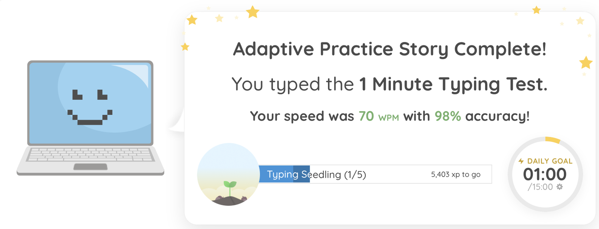

Virtual Assistant | Tech & Admin Support
I handle the admin work, and I can fix the tech problems around it.
- HTML/CSS/JS
- Python
- Java
- SQL
- Git/GitHub
- Vercel
- Google Colab
- MS Office
- AI tools & prompting
About me
I'm Andrianne, a third-year Computer Science student in the Philippines. I like work that's done right: I check the details, keep things organized, and don't leave loose ends. I'm comfortable with tech, so when a spreadsheet breaks, a script is needed or a website needs a fix, I can handle it myself instead of passing it along. And I'm easy to work with: clear updates and no surprises.
- Detail-oriented
- Tech-literate
- Easy to work with
Admin support
Data entry & spreadsheet cleanup
Accurate data entry, and messy Excel sheets turned into tidy ones.
Word documents & file organization
Clean, consistent documents and folders you can actually find things in.
Online research & summaries
I look things up and send back short summaries you can use.
Clear English communication
Fluent written and spoken English for emails, messages and updates.
Organized & detail-focused
I keep track of tasks and files, and check my work before I send it back.
Everyday VA tools
I pick up the tools VA work runs on quickly, from spreadsheets and documents to AI assistants.
- Excel
- MS Office
- AI tools
-
70 WPM typing
Fast, steady typing for data entry, documents and transcribing notes.

My typing test result.
Tech & automation
Python automation scripts
Simple scripts that take repetitive tasks off your list.
- Python
- Google Colab
Website edits
Fixes and updates to a site's HTML, CSS and JavaScript.
- HTML
- CSS
- JavaScript
Data cleaning & basic SQL
Tidy up messy data, then pull answers out of it.
- SQL
- Excel
AI-assisted workflows
Faster drafts, research and planning, with a human check at the end.
- AI tools
- Prompting
Site deployment & hosting
Get a website online and keep it updated.
- GitHub
- Vercel
Tool setup & troubleshooting
Get new tools set up, track down what's broken and fix it, or tell you clearly what's needed.
- Troubleshooting
- MS Office
Also open to: email and inbox organization, calendar and scheduling support, and customer support.
How I use AI
I use AI to work faster. I check everything before delivering.
Projects
Skills & tools
Tools
- HTML/CSS/JS
- Python
- Java
- SQL
- Git/GitHub
- Vercel
- Google Colab
- MS Office
- AI tools & prompting
Working skills
- Written & spoken English
- Communication
- Organization
- Attention to detail
- Problem-solving
- Quick learner
- Reporting back
Availability
Philippine time · · Your time
Hours
Part-time, about 3-5 hrs/day.
Time zone
Available 3 PM to 2 AM Philippine time (best finished by midnight), which covers UK/Europe business hours and US East Coast mornings.
How I work
- You send the taskTell me what you need and when it's due. A short written brief is enough.
- I work through itI get on with it during my hours (3 PM to 2 AM Philippine time), on my own schedule within your deadline.
- I check it, then report backI check everything before delivering, then let you know it's done.
Let's work together
Send me the task and the deadline, and I'll take it from there.